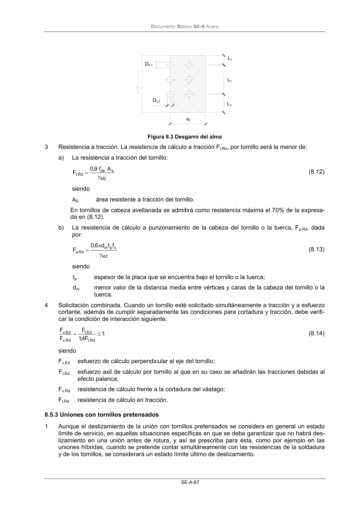

DB-SE-A Acero · edición 2007-10-23 · capa oficial
Documento DB-SE-A-oficial · SHA-256 del PDF 9ed9ea694aabfbda3bfbbef40dfe9223fde05d13c35bc2ba9751e5a96a22a64f
Copia fiel del PDF fuente · Fuente oficial
Ficha de la disposición en la fuente oficial
Formatos: JSON del segmento · Markdown
8.5.3 Uniones con tornillos pretensados 1 Aunque el deslizamiento de la unión con tornillos pretensados se considera en general un estado límite de servicio, en aquellas situaciones específicas en que se deba garantizar que no habrá des- lizamiento en una unión antes de rotura, y así se prescriba para ésta, como por ejemplo en las uniones híbridas, cuando se pretende contar simultáneamente con las resistencias de la soldadura y de los tornillos, se considerará un estado límite último de deslizamiento. Lv L3 a2 D0,2 Do,1 L1 DocumentoBásico SE-A Acero SE-A-68 2 Resistencia a cortante. La resistencia de cálculo a deslizamiento de un tornillo pretensado, será: Cd . p 2 M s Rd .s F n k F γ µ = (8.15) con los mismos criterios establecidos en 7.2.3 para las condiciones de servicio, pero tomando co- mo coeficiente parcial de seguridad el siguiente: γM2 = 1,25 en uniones con agujeros con medidas nominales γM2 = 1,40 en uniones con agujeros con sobremedida en dirección paralela a la del esfuerzo. 3 Resistencia a tracción. El esfuerzo de cálculo de tracción, al que en su caso se añadirán las trac- ciones debidas al efecto palanca, debe ser menor o igual que la fuerza de pretensado, Fp.Cd. 4 Solicitación combinada. En el caso de que actúen simultáneamente sobre el tornillo esfuerzos de tracción y cortante, la resistencia de cálculo al deslizamiento correspondiente al estado límite últi- mo se tomará de la siguiente expresión: ( ) 2 M Ed .t Cd . p s Rd .s F 8,0 F n k F γ − µ = (8.16) siendo Ft.Ed esfuerzo axil de cálculo del tornillo, al que en su caso, se añadirán las tracciones debidas al efecto palanca. No se reducirá la resistencia de cálculo al deslizamiento de la unión cuando las tracciones, por proceder de un momento en la unión, estén equilibradas por una fuerza de contacto igual en la zo- na comprimida.
